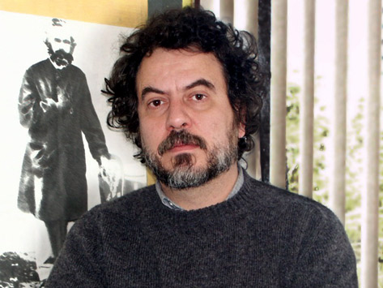

Os Sócios da Casa

( Da esquerda para direita )
Giba Assis Brasil, montador. Nora Goulart, produtora. Jorge Furtado, roteirista e realizador. Ana Luiza Azevedo, roteirista e realizadora.
Ana Luiza Azevedo
Diretora e roteirista. Sócia da produtora Casa de Cinema de Porto Alegre. Diretora e Roteirista do longa ANTES QUE O MUNDO ACABE (2010), do telefilme DOCE DE MÃE (2012 – TV GLOBO) e da série DOCE DE MÃE (2013/2014 - TV GLOBO). Diretora, junto com Jorge Furtado, do documentário QUEM É PRIMAVERA DAS NEVES (2017). Dirigiu e roteirizou os curtas de ficção DONA CRISTINA PERDEU A MEMÓRIA (2002), TRÊS MINUTOS (1999), BARBOSA (1988) e os documentários VENTRE LIVRE (1994), EM FRENTE DA LEI TEM UM GUARDA (2001), OLHO DA RUA (2002) e O GRÃO DA IMAGEM (2007). Dirigiu ainda vários especiais para televisão, como DIA DE VISITA (2001 – TV GLOBO), A IMPORTÂNCIA DO CURRÍCULO NA CARREIRA DO ATOR (2001 – RBSTV), O BOCHECHA (2002 - RBSTV) e as séries FANTASIAS DE UMA DONA DE CASA (2008-2009 – RBSTV) e DECAMERÃO (2010 – TV GLOBO). Fez a direção geral da série MULHER DE FASES (2011 – HBO). Como Assistente de Direção, participou de diversos filmes, entre eles os curtas ILHA DAS FLORES (1989), as séries LUNA CALIENTE (2000 – TV GLOBO) e DECAMERÃO (2009 – TV GLOBO) e os longas TOLERÂNCIA (2000) e BENS CONFISCADOS (2004). Foi diretora assistente em O HOMEM QUE COPIAVA (2003), MEU TIO MATOU UM CARA (2005), SAL DE PRATA (2005) e no telefilme HOMENS DE BEM (2011). Foi programadora, de 2001 à 2011, do Cine Santander Cultural, em Porto Alegre.
Atualmente é uma das responsáveis pelo Núcleo de Criação de Textos para TV e Cinema da Casa de Cinema de Porto Alegre. Está desevolvendo os roteiros da série O HARÉM e trabalha também em seu novo projeto de longa-metragem AOS OLHOS DE ERNESTO, em fase de pré-produção.
• Currículo
• Filmografia no IMDB
• Foto
ana@casacinepoa.com.br
Giba Assis Brasil
Montador e roteirista. Professor do curso de Realização Audiovisual da Unisinos desde 2003, também deu aulas na UFRGS entre 1994 e 2005. Roteirista dos longas ME BEIJA (1984), O MENTIROSO (1988) e SUPER COLOSSO (1995), das minisséries de TV AGOSTO (1993) e LUNA CALIENTE (1998). Líder do Núcleo criativo da Casa de Cinema de Porto Alegre. Codirigiu o longa-metragem VERDES ANOS (1984) e o longa em super-8 DEU PRA TI ANOS 70 (1981). Montador de 20 longas-metragens: TOLERÂNCIA (2000), HOUVE UMA VEZ DOIS VERÕES (2002), O HOMEM QUE COPIAVA (2003), MEU TIO MATOU UM CARA (2005), SAL DE PRATA (2005), SANEAMENTO BÁSICO, O FILME (2007), Ó PAÍ Ó (2007), 3 EFES (2007), GIGANTE, COMO O INTER CONQUISTOU O MUNDO (2007), NADA VAI NOS SEPARAR (2009), QUASE UM TANGO (2009), ANTES QUE O MUNDO ACABE (2010), A ANTROPÓLOGA (2011), MENOS QUE NADA (2012), EL PADRE DE GARDEL (2013), O MERCADO DE NOTÍCIAS (2014), REAL BELEZA (2015), ANAUÊ (2017), QUEM É PRIMAVERA DAS NEVES (2017) e PARAÍSO PERDIDO (em finalização). Montador de mais de 40 curtas, entre eles ILHA DAS FLORES (1989), ESTA NÃO É A SUA VIDA (1991), DEUS EX-MACHINA (1995) e DONA CRISTINA PERDEU A MEMÓRIA (2002); montador de mais de 100 episódios de televisão, para séries como BRAVA GENTE (2001), CONTOS DE INVERNO (2001-2002), CENA ABERTA (2003), DECAMERÃO, A COMÉDIA DO SEXO (2009), MULHER DE FASES (2011), DOCE DE MÃE (2014) e GRANDES CENAS (2016-17).
• Currículo
• Filmografia no IMDB
• Foto
gibaab@uol.com.br
Jorge Furtado
Diretor e roteirista dos longas HOUVE UMA VEZ DOIS VERÕES (2002), O HOMEM QUE COPIAVA (2003) e MEU TIO MATOU UM CARA (2005) SANEAMENTO BÁSICO, O FILME (2007), O MERCADO DE NOTÍCIAS (2014), REAL BELEZA (2015) e QUEM É PRIMAVERA DAS NEVES (2017). Dirigiu também vários curtas-metragens premiados no Brasil e no exterior, como O DIA EM QUE DORIVAL ENCAROU A GUARDA (1986), BARBOSA (1988), ILHA DAS FLORES (1989), ESTA NÃO É A SUA VIDA (1991), ÂNGELO ANDA SUMIDO (1997), e O SANDUÍCHE (2000). Para a TV Globo, dirigiu a série CENA ABERTA (2003), a minissérie LUNA CALIENTE (1998), DECAMERÃO (2010), as três temporadas de HISTÓRIA DO AMOR (2011/ 2012/2013), e os telefilmes HOMENS DE BEM (2011) e DOCE DE MÃE (2012). Este último originou a série em 14 episódios DOCE DE MÃE (2014) e rendeu dois prêmios Emmy Internacional: Melhor atriz, para Fernanda Montenegro, em 2013, e Melhor Série de Comédia, em 2015. Jorge Furtado é um dos sócios-fundadores da Casa de Cinema de Porto Alegre. Atualmente está em pré-produção do seu novo longa: RASGA CORAÇÃO.
• Currículo
• Filmografia no IMDB
• Foto
jfurtado2222@gmail.com
Nora Goulart
 Produtora Executiva dos longas TOLERÂNCIA (2000), HOUVE UMA VEZ DOIS VERÕES (2002), O HOMEM QUE COPIAVA (2003), MEU TIO MATOU UM CARA (2005), SAL DE PRATA (2005), SANEAMENTO BÁSICO, OFILME (2007), ANTES QUE O MUNDO ACABE (2009), REAL BELEZA (2015), CIDADES FANTASMAS (2017) e QUEM É PRIMAVERA DAS NEVES (2017) e de curtas-metragens como BARBOSA (1988), ILHA DAS FLORES (1989), A MATADEIRA (1994), UM HOMEM SÉRIO (1996), O SANDUÍCHE (2000), e do episódio ESTRADA no longa FELICIDADE É... (1995). Foi Coordenadora de Produção da RBS Vídeo (de 1989 a 1991) e da TVC Cinema e Televisão, São Paulo (1991). Produziu, para a TV Globo, segmentos de VOCÊ DECIDE (1991), DORIS PARA MAIORES (1991-92), o especial O ALIENISTA (1993), a minissérie LUNA CALIENTE (1998) e episódios da série BRAVA GENTE (2000 e 2001), além da série CENA ABERTA (2003) e DECAMERÃO (2009) e HISTÓRIA DO AMOR (2011). Produtora Executiva dos programas de TV das campanhas eleitorais do PT em 1992 a 2000. Produtora Executiva das séries FANTASIAS DE UMA DONA DE CASA 1ª e 2ª Temporada (2008 e 2009) e AVENTURAS DA FAMÍLIA BRASIL 1ª e 2ª Temporada (2009) para RBS TV. Pra a HBO, produziu a série MULHER DE FASES (2011). Atualmente prepara a produção dos longas RASGA CORAÇÃO e AOS OLHOS DE ERNESTO.
Produtora Executiva dos longas TOLERÂNCIA (2000), HOUVE UMA VEZ DOIS VERÕES (2002), O HOMEM QUE COPIAVA (2003), MEU TIO MATOU UM CARA (2005), SAL DE PRATA (2005), SANEAMENTO BÁSICO, OFILME (2007), ANTES QUE O MUNDO ACABE (2009), REAL BELEZA (2015), CIDADES FANTASMAS (2017) e QUEM É PRIMAVERA DAS NEVES (2017) e de curtas-metragens como BARBOSA (1988), ILHA DAS FLORES (1989), A MATADEIRA (1994), UM HOMEM SÉRIO (1996), O SANDUÍCHE (2000), e do episódio ESTRADA no longa FELICIDADE É... (1995). Foi Coordenadora de Produção da RBS Vídeo (de 1989 a 1991) e da TVC Cinema e Televisão, São Paulo (1991). Produziu, para a TV Globo, segmentos de VOCÊ DECIDE (1991), DORIS PARA MAIORES (1991-92), o especial O ALIENISTA (1993), a minissérie LUNA CALIENTE (1998) e episódios da série BRAVA GENTE (2000 e 2001), além da série CENA ABERTA (2003) e DECAMERÃO (2009) e HISTÓRIA DO AMOR (2011). Produtora Executiva dos programas de TV das campanhas eleitorais do PT em 1992 a 2000. Produtora Executiva das séries FANTASIAS DE UMA DONA DE CASA 1ª e 2ª Temporada (2008 e 2009) e AVENTURAS DA FAMÍLIA BRASIL 1ª e 2ª Temporada (2009) para RBS TV. Pra a HBO, produziu a série MULHER DE FASES (2011). Atualmente prepara a produção dos longas RASGA CORAÇÃO e AOS OLHOS DE ERNESTO.
• Currículo
• Filmografia no IMDB
• Foto
• Contato: nora@casacinepoa.com.br